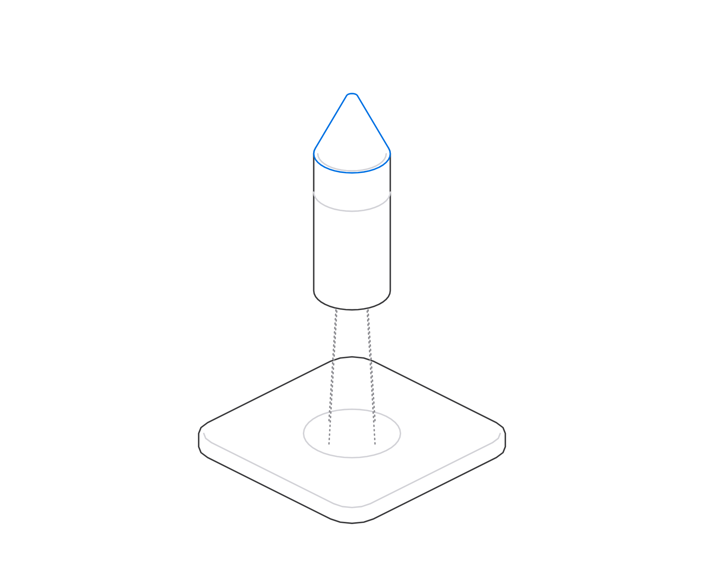
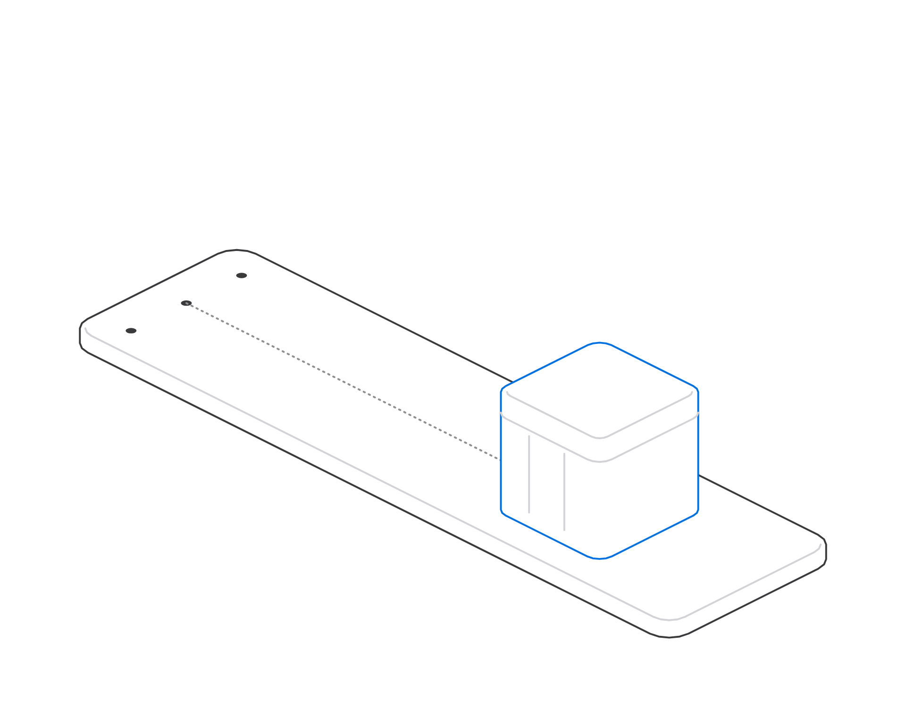
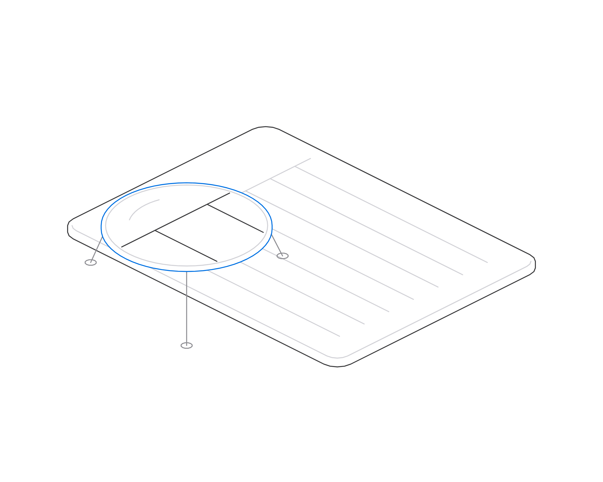

CBSE Class 9 Physics. Each page shows one slide beside what to say, what to ask, and the misconception to watch for.
Before the lesson
Have a book, a coin, a playing card and a glass ready for quick demonstrations. Write the three SI units, m, kg and s, in a corner of the board.
Syllabus: aligned to CBSE Class 9 Science 2026–27, NCERT Exploration chapters “Describing Motion Around Us” and “How Forces Affect Motion”. Physical quantities, SI units and scalars and vectors are taught as foundations.
00
Opening
0–3 min
01
What is physics?
3–7 min
02
Physical quantities and SI units
7–13 min
03
Scalars and vectors
13–17 min
04
Distance and displacement
17–23 min
05
Speed and velocity
23–30 min
06
Uniform and non-uniform motion
30–35 min
07
Acceleration
35–40 min
08
Equations of motion
40–48 min
09
Force and Newton's laws
48–57 min
10
Practice and recap
57–60 min
Total
60 min
Practice questions 3 to 8 and the answer key are set as homework.
Teacher editionCBSE Class 9 · Physics
00OpeningMinute 0 · 1 min
CBSE Class 9 · Physics · 60-minute lesson
Motion and force.
Physics from the very first step: how things move, how we measure it, and why it happens.
UnitsVectorsSpeed and velocityAccelerationNewton's laws

CBSE Class 9 · Physics · Motion and force01 / 39
Say
Welcome the class. Today is about the most visible part of physics: things moving. By the end, everyone will be able to describe any motion with numbers and explain what causes it.
Ask
Before we start: what is the fastest thing you have seen move today?
Teacher edition · slide 01 of 39CBSE Class 9 · Physics
00OpeningMinute 1 · 1 min
00OpeningMinute 1
The plan
Sixty minutes, ten small steps.
01What is physics?3–7 min
02Physical quantities and SI units7–13 min
03Scalars and vectors13–17 min
04Distance and displacement17–23 min
05Speed and velocity23–30 min
06Uniform and non-uniform motion30–35 min
07Acceleration35–40 min
08Equations of motion40–48 min
09Force and Newton's laws48–57 min
10Practice and recap57–60 min
Aligned to CBSE Class 9 Science 2026–27 (NCERT Exploration: “Describing Motion Around Us” and “How Forces Affect Motion”). Units and vectors are taught as foundations.
CBSE Class 9 · Physics · Motion and force02 / 39
Say
Walk through the map in under a minute. Point out the pattern: we start with words, move to measuring, then to calculating, and finish with what causes motion.
Teacher edition · slide 02 of 39CBSE Class 9 · Physics
00OpeningMinute 2 · 1 min
00OpeningMinute 2
How we will learn
Every idea gets the same four steps.
01
A simple definition
In words you could explain to a friend.
02
An everyday example
Cars, bicycles, balls and you.
03
A picture and a formula
With every symbol and unit explained.
04
A worked problem
Step by step, then you try one.

CBSE Class 9 · Physics · Motion and force03 / 39
Say
Set expectations: no one needs to be good at maths already. Every formula will be built from an everyday idea first.
Misconception to address
Some students believe physics is 'just formulas'. Stress that each formula is a sentence about the world written in short form.
Teacher edition · slide 03 of 39CBSE Class 9 · Physics
01What is physics?Minutes 3–7 · 2 min
01What is physics?Minutes 3–7
01 · What is physics?
Physics is the study of matter, energy, and how they interact.
It explains how things move and why. The same few rules work for a bicycle, a cricket ball and a rocket.
CBSE Class 9 · Physics · Motion and force04 / 39
Say
Give the definition in one breath, then make it concrete: physics answers two questions about anything that moves. How is it moving? Why is it moving that way? Point at each picture and ask which question it raises.
Ask
Which of these four would be hardest to stop, and why?
Misconception to address
Students often think physics is only about laboratories. Every picture here is something they do or see daily.
Teacher edition · slide 04 of 39CBSE Class 9 · Physics
01What is physics?Minutes 3–7 · 2 min
01What is physics?Minutes 3–7
Motion is everywhere
Describing motion needs three things.
A reference point
Where are we measuring from? A school gate, a lamp post, the start line.
A measurement
How far, how fast, how long, with a unit.
A direction
Which way? East, up, towards the wall.
Ask the class
Is a student sitting at a desk moving? Think about the Earth.
CBSE Class 9 · Physics · Motion and force05 / 39
Say
Motion only makes sense compared with something: a reference point. Use the car: it is moving relative to the school gate. Then ask the question on the slide.
Ask
Is a student sitting at a desk moving? (Answer: relative to the classroom, no. Relative to the Sun, yes, because the Earth moves. Motion is relative.)
Misconception to address
Many students think motion is absolute. Address it here: whether something is moving depends on the reference point.
Teacher edition · slide 05 of 39CBSE Class 9 · Physics
02Physical quantities and SI unitsMinutes 7–13 · 1.5 min
02Physical quantities and SI unitsMinutes 7–13
02 · Physical quantities
A measurement is a number and a unit.
DefinitionA physical quantity is anything we can measure, such as length, mass or time.
5
means nothing
→
5 m
five metres

CBSE Class 9 · Physics · Motion and force06 / 39
Say
Hold up a pencil. Ask 'how long is it?' If a student says '15', ask '15 what?' That is the whole point: a number without a unit is not a measurement.
Ask
If I say my school is '2' from home, what could I mean? (2 km? 2 minutes? 2 bus stops?)
Misconception to address
Students drop units in answers. From today, every answer needs a unit, and marks depend on it in exams.
Teacher edition · slide 06 of 39CBSE Class 9 · Physics
02Physical quantities and SI unitsMinutes 7–13 · 1.5 min
02Physical quantities and SI unitsMinutes 7–13
The SI system
Seven base units. Everything else is built from them.
SI stands for the International System of Units, used by scientists in every country.
Quantity
Unit
Symbol
Length
metre
m
Mass
kilogram
kg
Time
second
s
Electric current
ampere
A
Temperature
kelvin
K
Amount of substance
mole
mol
Luminous intensity
candela
cd
Today we need three
Length in metres, mass in kilograms and time in seconds. Speed, acceleration and force are all built from these.
Watch out: the symbol for second is s, not "sec". Units named after people, like ampere, still use a small letter when written in full.
CBSE Class 9 · Physics · Motion and force07 / 39
Say
Do not ask students to memorise all seven today. Highlight the first three. Mention that the kilogram is the only base unit with a prefix built in.
Misconception to address
Common errors: writing 'Kg' or 'Sec', and mixing units such as km with seconds in one formula.
Teacher edition · slide 07 of 39CBSE Class 9 · Physics
02Physical quantities and SI unitsMinutes 7–13 · 2 min
02Physical quantities and SI unitsMinutes 7–13
Derived units and prefixes
Bigger and smaller units.
Prefix
Symbol
Means
kilo
k
× 1000
centi
c
÷ 100
milli
m
÷ 1000
Speed is a derived quantity: distance ÷ time. Its SI unit is the metre per second, \(\text{m/s}\) or \(\text{m s}^{-1}\).
Build the 5/18 factor on the board: 1 km is 1000 m, 1 hour is 3600 s, so 1000/3600 simplifies to 5/18. Students remember a factor they derived far better than one they were told.
Ask
Quick: what is 36 km/h in m/s? (10 m/s.)
Misconception to address
Students multiply by 18/5 when they should multiply by 5/18. Tip: m/s numbers are always smaller than the same speed in km/h.
Teacher edition · slide 08 of 39CBSE Class 9 · Physics
02Physical quantities and SI unitsMinutes 7–13 · 1 min
02Physical quantities and SI unitsMinutes 7–13
Your turn
Two quick conversions.
Question 1
A cyclist rides at \(18\ \text{km/h}\). What is that in m/s?
Question 2
A cheetah can run at about \(30\ \text{m/s}\). What is that in km/h?
CBSE Class 9 · Physics · Motion and force09 / 39
Say
Give 60 seconds. Take answers from two students and ask them to say the factor they used.
Ask
Answers: 18 × 5/18 = 5 m/s. 30 × 18/5 = 108 km/h.
Teacher edition · slide 09 of 39CBSE Class 9 · Physics
03Scalars and vectorsMinutes 13–17 · 2 min
03Scalars and vectorsMinutes 13–17
03 · Scalars and vectors
Some quantities need a direction.
ScalarHas size only. Mass, time, distance, speed, temperature.
VectorHas size and direction. Displacement, velocity, acceleration, force.
We draw a vector as an arrow: its length shows the size, its head shows the direction.
"5 km" is a scalar. "5 km north" is a vector.
CBSE Class 9 · Physics · Motion and force10 / 39
Say
Use directions to a friend's house: '5 km' is not enough to find it, '5 km north' is. That is the difference between a scalar and a vector.
Misconception to address
Students think vectors are only arrows on paper. Stress that the direction is part of the quantity itself.
Teacher edition · slide 10 of 39CBSE Class 9 · Physics
03Scalars and vectorsMinutes 13–17 · 2 min
03Scalars and vectorsMinutes 13–17
Sort them
Scalar or vector?
Mass
of a school bag
Velocity
of a train going west
Time
taken for a race
Force
pushing a door open
Ask the class
Hold up one finger for scalar, two for vector, as I point to each card.
CBSE Class 9 · Physics · Motion and force11 / 39
Say
Point to each card in turn and let the class vote with fingers. Then reveal: mass scalar, velocity vector, time scalar, force vector.
Ask
Answers: Mass: scalar. Velocity: vector. Time: scalar. Force: vector (a push has a direction).
Misconception to address
Some students say time is a vector because it 'goes forwards'. In Class 9 physics, time is a scalar.
Teacher edition · slide 11 of 39CBSE Class 9 · Physics
04Distance and displacementMinutes 17–23 · 2 min
04Distance and displacementMinutes 17–23
04 · Distance and displacement
How far you went, and how far you got.
DistanceThe total length of the path travelled. A scalar.
DisplacementThe shortest straight line from start to finish, with direction. A vector.
Both are measured in metres (m).
CBSE Class 9 · Physics · Motion and force12 / 39
Say
Ask a student how they come to school. The road twists: that is distance. Now imagine a bird flying straight from home to school: that straight arrow is displacement.
Ask
If you walk to the canteen and back to class, what is your displacement? (Zero: you ended where you started.)
Misconception to address
Students think displacement is just 'distance with a direction'. It is the straight-line change in position, so it can be much smaller than distance, even zero.
Teacher edition · slide 12 of 39CBSE Class 9 · Physics
04Distance and displacementMinutes 17–23 · 2 min
04Distance and displacementMinutes 17–23
Worked example
A walk around the playground.
Question
Riya walks 3 m east, then 4 m north. Find the distance and the displacement.
Distance
Add the path lengths: \(3 + 4 = 7\ \text{m}\)
Displacement
The straight line is the hypotenuse: \(\sqrt{3^2 + 4^2} = \sqrt{25}\)
Answer
Distance \(= 7\ \text{m}\). Displacement \(= 5\ \text{m}\) towards the north-east.
CBSE Class 9 · Physics · Motion and force13 / 39
Say
Draw the right angle on the board. Most Class 9 students know Pythagoras from maths: link it explicitly. Emphasise that a displacement answer needs a direction.
Ask
Which is bigger, and can it ever be the other way round?
Misconception to address
Students add 3 + 4 for displacement. Ask: 'Did Riya end up 7 m from where she started?'
Teacher edition · slide 13 of 39CBSE Class 9 · Physics
04Distance and displacementMinutes 17–23 · 2 min
04Distance and displacementMinutes 17–23
Worked example
One lap of the track.
Question
An athlete runs exactly one lap of a 400 m track and stops at the start line.
Distance
The whole lap was run: 400 m.
Displacement
Start and finish are the same point, so the straight line between them has zero length.
This is the example students remember. Run your finger round the track, then point at the start: 'How far is she from where she began?'
Ask
Can displacement ever be greater than distance? (No. It can be equal, when the path is a straight line in one direction, or smaller, but never greater.)
Misconception to address
Students think zero displacement means 'did not move'. She ran 400 m; she simply came back.
Teacher edition · slide 14 of 39CBSE Class 9 · Physics
05Speed and velocityMinutes 23–30 · 1.5 min
05Speed and velocityMinutes 23–30
05 · Speed
How fast something covers distance.
DefinitionSpeed is the distance travelled per unit time. A scalar.
\[\text{speed} = \frac{\text{distance}}{\text{time}} \qquad v = \frac{s}{t}\]
Symbol
Means
SI unit
\(v\)
speed
m/s
\(s\)
distance travelled
m
\(t\)
time taken
s
A speedometer shows the speed at each instant.
CBSE Class 9 · Physics · Motion and force15 / 39
Say
Speed is something students already feel. Link to the speedometer: it does not care which way the car points, only how fast it goes. That is why speed is a scalar.
Misconception to address
Note that in the speed formula, s means distance here; later, in velocity and the equations of motion, s means displacement. Say this out loud to avoid confusion.
Teacher edition · slide 15 of 39CBSE Class 9 · Physics
05Speed and velocityMinutes 23–30 · 1.5 min
05Speed and velocityMinutes 23–30
Velocity
Speed with a direction.
DefinitionVelocity is the displacement per unit time. A vector.
Work the first one quickly. In the second, slow down at the conversion: minutes must become seconds before dividing, because the answer must be in m/s.
Misconception to address
Forgetting to convert minutes to seconds. And forgetting the direction in a velocity answer.
Teacher edition · slide 17 of 39CBSE Class 9 · Physics
Go 60 km at 60 km/h. Return the same 60 km at 30 km/h. Average speed?
Times
Going: 1 h. Returning: 2 h. Total: 3 h.
Solve
\(\tfrac{120\ \text{km}}{3\ \text{h}}\)
Answer
\(40\ \text{km/h}\) (not 45 km/h)
Ask the class
Why is the answer not simply the average of 60 and 30?
Remember: never average the speeds. Always divide total distance by total time. The slow part takes longer, so it counts for more.
CBSE Class 9 · Physics · Motion and force18 / 39
Say
Let the class guess first. Most will say 45. Then work it. This surprise makes the rule stick.
Ask
Why is the answer not 45? (Because the car spends twice as long at 30 km/h as at 60 km/h, so the slower speed counts for more of the time.)
Misconception to address
Averaging the speeds is the single most common error in average speed questions.
Teacher edition · slide 18 of 39CBSE Class 9 · Physics
06Uniform and non-uniform motionMinutes 30–35 · 2 min
06Uniform and non-uniform motionMinutes 30–35
06 · Uniform and non-uniform motion
Is the speed steady, or changing?
Uniform motionEqual distances in equal intervals of time. A car on cruise control.
Non-uniform motionUnequal distances in equal intervals. A bus leaving a stop.
CBSE Class 9 · Physics · Motion and force19 / 39
Say
Each dot is a photograph taken every second. Equal gaps means steady speed. Gaps that grow mean the object is speeding up. Ask which describes traffic in a city.
Ask
Is a ball rolling to a stop uniform or non-uniform? (Non-uniform: gaps get smaller.)
Misconception to address
Students think 'uniform' means 'moving fast'. It means moving at a steady rate in a straight line.
Teacher edition · slide 19 of 39CBSE Class 9 · Physics
06Uniform and non-uniform motionMinutes 30–35 · 3 min
06Uniform and non-uniform motionMinutes 30–35
Distance–time graphs
The slope tells you the speed.
A straight line means uniform speed. A curve means the speed is changing. The steeper the line, the faster the object.
Read
The blue line reaches 40 m at 8 s.
Solve
\(v = \tfrac{40\ \text{m}}{8\ \text{s}}\)
Answer
\(5\ \text{m/s}\)
CBSE Class 9 · Physics · Motion and force20 / 39
Say
Show how to read two values off the graph. Then trace the curve with your finger: it gets steeper, so the object is speeding up.
Ask
A flat horizontal line on a distance–time graph means what? (The object is at rest: distance is not changing.)
Misconception to address
Students read a distance–time graph as a picture of the path, like a hill. It is not a map; it shows how distance changes with time.
Teacher edition · slide 20 of 39CBSE Class 9 · Physics
07AccelerationMinutes 35–40 · 2 min
07AccelerationMinutes 35–40
07 · Acceleration
How quickly velocity changes.
DefinitionAcceleration is the change in velocity per unit time. A vector.
\[a = \frac{v - u}{t}\]
Symbol
Means
SI unit
\(a\)
acceleration
m/s²
\(u\)
initial velocity
m/s
\(v\)
final velocity
m/s
\(t\)
time taken
s
Velocity rises by 2 m/s every second: \(a = 2\ \text{m/s}^2\)
CBSE Class 9 · Physics · Motion and force21 / 39
Say
Walk through the three bicycles: every second, the velocity goes up by the same 2 m/s. That steady change is acceleration. Read the unit aloud: 'metres per second, per second'.
Misconception to address
Students confuse speed and acceleration: 'fast' is not 'accelerating'. A car cruising at 100 km/h in a straight line has zero acceleration.
Teacher edition · slide 21 of 39CBSE Class 9 · Physics
07AccelerationMinutes 35–40 · 3 min
07AccelerationMinutes 35–40
Worked examples
Speeding up and slowing down.
Question
A car starts from rest and reaches 20 m/s in 5 s. Find its acceleration.
What does the minus sign in the second answer tell us?
CBSE Class 9 · Physics · Motion and force22 / 39
Say
Stress 'starts from rest' means u = 0: exam questions use this phrase constantly. In the second example, let the minus sign appear naturally and ask what it means.
Ask
What does the minus sign mean? (The acceleration is opposite to the motion, so the cyclist slows down. This is called retardation or deceleration.)
Misconception to address
Students think negative acceleration always means slowing down. It means acceleration in the negative direction; it slows the object when it is opposite to the velocity, as here.
Teacher edition · slide 22 of 39CBSE Class 9 · Physics
08Equations of motionMinutes 40–48 · 2 min
08Equations of motionMinutes 40–48
08 · Equations of motion
Three equations for uniform acceleration.
\[v = u + at\]
\[s = ut + \tfrac{1}{2}at^2\]
\[v^2 = u^2 + 2as\]
They work only when the acceleration is uniform (constant) and the motion is in a straight line.
On a velocity–time graph, the slope is \(a\) and the area under the line is \(s\).
CBSE Class 9 · Physics · Motion and force23 / 39
Say
Show where the first equation comes from: rearrange a = (v − u)/t. Mention that the second comes from the shaded area on the graph. The textbook derives all three from this graph; today we focus on using them.
Misconception to address
Students apply these equations when acceleration is not constant. Always check the question says 'uniform acceleration' or 'uniformly'.
Teacher edition · slide 23 of 39CBSE Class 9 · Physics
08Equations of motionMinutes 40–48 · 1.5 min
08Equations of motionMinutes 40–48
Know your letters
Five quantities. Each equation leaves one out.
Symbol
Means
SI unit
\(u\)
initial velocity
m/s
\(v\)
final velocity
m/s
\(a\)
acceleration
m/s²
\(t\)
time
s
\(s\)
displacement
m
Equation
Leaves out
\(v = u + at\)
\(s\)
\(s = ut + \tfrac12 at^2\)
\(v\)
\(v^2 = u^2 + 2as\)
\(t\)
The method
1. Write what you know. 2. Write what you need. 3. Pick the equation that does not use the one quantity you neither know nor need.
CBSE Class 9 · Physics · Motion and force24 / 39
Say
This slide is the key skill. Teach the 'leave one out' trick: every problem gives three quantities and asks for a fourth; choose the equation without the fifth.
Misconception to address
Students try all three equations at random. Insist on writing 'Given' and 'Find' first, every time.
Teacher edition · slide 24 of 39CBSE Class 9 · Physics
08Equations of motionMinutes 40–48 · 2 min
08Equations of motionMinutes 40–48
Worked example 1
A car pulls away.
A car starts from rest and accelerates uniformly at \(2\ \text{m/s}^2\) for \(5\ \text{s}\). Find its final velocity and the distance covered.
Model the layout students should copy: Given, formula, substitution, answer with unit. Show the check with the third equation: it builds confidence that the answers are right.
Misconception to address
Squaring errors: ½ × 2 × 5² is ½ × 2 × 25, not ½ × 2 × 10.
Teacher edition · slide 25 of 39CBSE Class 9 · Physics
08Equations of motionMinutes 40–48 · 2.5 min
08Equations of motionMinutes 40–48
Worked example 2
A train brakes.
A train moving at \(20\ \text{m/s}\) brakes with a uniform acceleration of \(-0.5\ \text{m/s}^2\). How far does it travel before stopping, and how long does it take?
Ask the class
Which equation finds the distance without knowing the time?
Ask the question on the slide before solving. The answer is the third equation, because time is unknown. Then find the time with the first.
Ask
Which equation? (v² = u² + 2as, because it does not contain t.)
Misconception to address
Sign errors: braking means a is negative. Students who use +0.5 get a negative distance and get confused.
Teacher edition · slide 26 of 39CBSE Class 9 · Physics
09Force and Newton's lawsMinutes 48–57 · 1.5 min
09Force and Newton's lawsMinutes 48–57
09 · Force
A push or a pull.
DefinitionA force is a push or pull that can change an object's speed, direction or shape. A vector, measured in newtons (N).
Only an unbalanced (net) force changes motion.
CBSE Class 9 · Physics · Motion and force27 / 39
Say
Push a book across the desk. Then push it from both sides equally: nothing happens. That is balanced versus unbalanced. In the second picture the net force is 80 − 30 = 50 N to the right.
Ask
In the second picture, what is the net force? (50 N to the right.)
Misconception to address
Students think a moving object must have a force pushing it forwards. Introduce the idea here; the first law settles it.
Teacher edition · slide 27 of 39CBSE Class 9 · Physics
09Force and Newton's lawsMinutes 48–57 · 2 min
09Force and Newton's lawsMinutes 48–57
Newton's first law
Objects keep doing what they are doing.
First law (law of inertia)An object stays at rest, or keeps moving in a straight line at a steady speed, unless an unbalanced force acts on it.
Inertia is this tendency to resist a change in motion. More mass means more inertia.
When the bus brakes, your body tends to keep moving forwards.
CBSE Class 9 · Physics · Motion and force28 / 39
Say
Everyone has lurched forward in a braking bus: the bus stopped, their body did not want to. If possible, do the coin-on-card demonstration: flick the card and the coin drops into the glass.
Ask
Why does a ball rolling on grass eventually stop, if no one is pushing back? (Friction is an unbalanced force acting against its motion.)
Misconception to address
The big misconception: 'objects need a force to keep moving'. They need a force to change motion. Things stop because friction acts on them.
Teacher edition · slide 28 of 39CBSE Class 9 · Physics
09Force and Newton's lawsMinutes 48–57 · 1.5 min
09Force and Newton's lawsMinutes 48–57
Newton's second law
Force, mass and acceleration.
Second lawThe acceleration of an object is directly proportional to the net force and inversely proportional to its mass.
\[F = ma\]
Symbol
Means
SI unit
\(F\)
net force
newton (N)
\(m\)
mass
kg
\(a\)
acceleration
m/s²
\(1\ \text{N} = 1\ \text{kg m/s}^2\)
CBSE Class 9 · Physics · Motion and force29 / 39
Say
Use the trolley picture: the same push on a light trolley and a heavy one. The light one speeds up faster. Then show F = ma as the short form of that sentence. If time allows, add that the textbook states the law using momentum, p = mv: force is the rate of change of momentum, which gives F = ma when mass stays constant.
Ask
Which is harder to stop, a cricket ball or a football moving at the same speed? Why? (The football usually has more mass, so more momentum and more inertia.)
Misconception to address
Students use mass in grams. Mass must be in kilograms for force to come out in newtons.
Teacher edition · slide 29 of 39CBSE Class 9 · Physics
09Force and Newton's lawsMinutes 48–57 · 1.5 min
09Force and Newton's lawsMinutes 48–57
Worked examples
Using F = ma.
Question
What force gives a 1000 kg car an acceleration of 2 m/s²?
Formula
\(F = ma\)
Solve
\(1000 \times 2\)
Answer
\(F = 2000\ \text{N}\)
Question
A net force of 10 N acts on a 0.5 kg ball. Find its acceleration.
Formula
\(a = \tfrac{F}{m}\)
Solve
\(\tfrac{10}{0.5}\)
Answer
\(a = 20\ \text{m/s}^2\)
CBSE Class 9 · Physics · Motion and force30 / 39
Say
Do both quickly. In the second, show the rearrangement a = F/m as a separate line.
Misconception to address
Dividing 10 by 0.5 gives 20, not 5. Students who rush often divide the wrong way.
Teacher edition · slide 30 of 39CBSE Class 9 · Physics
09Force and Newton's lawsMinutes 48–57 · 1.5 min
09Force and Newton's lawsMinutes 48–57
Newton's third law
Forces come in pairs.
Third lawFor every action there is an equal and opposite reaction.
The two forces act on different objects, so they never cancel each other out.
Walking: your foot pushes the ground back, the ground pushes you forward. Swimming, a gun's recoil and a rocket all work the same way.
Two objects, two forces
Gases pushed down, rocket pushed up
CBSE Class 9 · Physics · Motion and force31 / 39
Say
Ask a student to push the wall. Can they feel the wall pushing back? Then the rocket: it pushes hot gases down, the gases push the rocket up.
Ask
If action and reaction are equal and opposite, why do they not cancel? (They act on different objects: one on the wall, one on the hand.)
Misconception to address
The biggest third-law misconception is that the pair cancels. Forces cancel only when they act on the same object.
Teacher edition · slide 31 of 39CBSE Class 9 · Physics
09Force and Newton's lawsMinutes 48–57 · 1 min
09Force and Newton's lawsMinutes 48–57
Your turn
Which law is it?
Situation A
A tablecloth is pulled quickly and the dishes stay on the table.
Situation B
Kicking a football harder makes it speed up more.
Situation C
A swimmer pushes water backwards and moves forwards.
CBSE Class 9 · Physics · Motion and force32 / 39
Say
Read each situation. Students answer 1, 2 or 3 with fingers. Ask one student to explain each answer in one sentence.
Ask
Answers: A: first law (inertia of the dishes). B: second law (bigger force, bigger acceleration). C: third law (action and reaction).
Teacher edition · slide 32 of 39CBSE Class 9 · Physics
10Practice and recapMinutes 57–60 · 1.5 min
10Practice and recapMinutes 57–60
Practice
CBSE-style questions.
Try Q1 and Q2 now. The rest are for homework; full solutions follow.
Q1
Conceptual
Can an object have zero displacement but a non-zero distance? Give an example.
Q2
Numerical
Convert 54 km/h into m/s, and 25 m/s into km/h.
Q3
Numerical
A bus starts from rest and accelerates uniformly at 0.1 m/s² for 2 minutes. Find its final speed and the distance it travels.
Q4
Numerical
A train moving at 90 km/h brakes with a uniform acceleration of −0.5 m/s². How far does it travel before it stops?
CBSE Class 9 · Physics · Motion and force33 / 39
Say
Give two minutes for Q1 and Q2 in class. Set Q3 to Q8 as homework. The answer key follows these two slides; share it after students have attempted the questions.
Ask
Q1 answer: yes, e.g. one lap of a track. Q2: 15 m/s and 90 km/h.
Teacher edition · slide 33 of 39CBSE Class 9 · Physics
10Practice and recapHomework
10Practice and recapHomework
Practice
CBSE-style questions, continued.
Q5
Numerical
An athlete runs round a circular track of diameter 200 m and completes one round in 40 s. Find the distance and the displacement after 2 min 20 s. (Take π = 22/7.)
Q6
Numerical
What net force is needed to give a 1500 kg car an acceleration of 2 m/s²?
Q7
Conceptual
Passengers in a bus fall forward when it stops suddenly. Explain why, using Newton's first law.
Q8
Conceptual
Action and reaction forces are equal and opposite. Explain why they do not cancel each other.
CBSE Class 9 · Physics · Motion and force34 / 39
Say
Homework questions. Point out that Q5 is a classic NCERT-style problem: it combines distance, displacement and a circle.
Teacher edition · slide 34 of 39CBSE Class 9 · Physics
10Practice and recapAnswer key
10Practice and recapAnswer key
Answer key
Detailed solutions, Q1 to Q4.
Q1
Yes. Distance is the length of the path, displacement is the straight line from start to finish. An athlete who runs one full lap of a track covers a distance of 400 m, but ends at the start, so the displacement is 0.
Teacher edition · slide 35 of 39CBSE Class 9 · Physics
10Practice and recapAnswer key
10Practice and recapAnswer key
Answer key
Detailed solutions, Q5 to Q8.
Q5
\(2\ \text{min}\ 20\ \text{s} = 140\ \text{s}\), so rounds \(= \tfrac{140}{40} = 3.5\). Circumference \(= \pi d = \tfrac{22}{7} \times 200 = \tfrac{4400}{7}\ \text{m}\). Distance \(= 3.5 \times \tfrac{4400}{7} = 2200\ \text{m}\). After 3.5 rounds the athlete is on the opposite side, so displacement \(= d = 200\ \text{m}\).
Q6
\(F = ma = 1500 \times 2 = 3000\ \text{N}\).
Q7
The bus stops because the brakes act on it, but the passengers' bodies tend to stay in motion because of inertia (Newton's first law), so they move forward.
Q8
Action and reaction act on two different objects. Forces can cancel only when they act on the same object, so the pair does not cancel.
CBSE Class 9 · Physics · Motion and force36 / 39
Say
For Q5, draw the circle and mark where 3.5 rounds ends: directly opposite the start, one diameter away.
Teacher edition · slide 36 of 39CBSE Class 9 · Physics
10Practice and recapMinutes 57–60 · 1 min
10Practice and recapMinutes 57–60
Recap
Nine ideas to take home.
01
Physical quantity
a number and a unit
02
Scalar / vector
size only / size and direction
03
Distance / displacement
path length / straight line, with direction
04
Speed / velocity
distance per time / displacement per time
05
Uniform motion
equal distances in equal times
06
Acceleration
change in velocity per unit time
07
First law
inertia: no change without a net force
08
Second law
F = ma
09
Third law
equal and opposite pairs, on different objects
CBSE Class 9 · Physics · Motion and force37 / 39
Say
Ask a different student to say each card in their own words. If anyone hesitates, that is tomorrow's starter.
Teacher edition · slide 37 of 39CBSE Class 9 · Physics